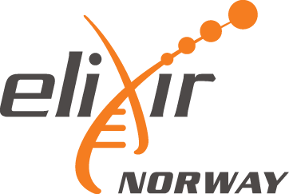

Eager to get started? Our Quickstart tutorial quickly guides you through the steps of an immuneML machine learning analysis in Galaxy.
If you are unfamiliar with Galaxy, our Introduction to Galaxy covers all the basics needed to use this interface.
To learn more about how to run specific Galaxy tools, see immuneML & Galaxy. You may also find example use cases in the Published Histories section.
We provide simplified interfaces for immune receptor and repertoire classification, which do not assume previous knowledge of machine learning. Other tools take in a YAML specification, which is equivalent to the file used as input to the immuneML command-line tool.
The Galaxy interface is intended to make it easy for users to try out immuneML quickly, but for large-scale analyses, please install immuneML locally or on a private server.
See also our main website and documentation for more information. If you have any questions or other requests, please email us at contact@immuneml.uio.no. Bug reports should be sent to bugreport@immuneml.uio.no. Also, please consider joining the immuneML newsletter mailing list to receive information and updates.
The immuneML team is part of the Department of Informatics, the Centre for Bioinformatics and the Department of immunology at the University of Oslo. The public web server of immuneML has been developed with support from the University Center for Information Technology at the University of Oslo and ELIXIR Norway.
immuneML is supported by the SUURPh programme, the Helmsley Charitable Trust, UiO World-Leading Research Community, UiO:LifeSciences Convergence Environment, EU Horizon 2020 iReceptor Plus (#825821), Research Council of Norway (#300740, #311341)
The Galaxy Project is supported in part by NHGRI, NSF, The Huck Institutes of the Life Sciences, The Institute for CyberScience at Penn State, and Johns Hopkins University.
